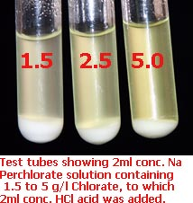

Tests for Chlorate and Perchlorate
The ability to be able to tell what, and how much of what, is in your product is very useful. The ability to test for trace amounts of Chlorate in Perchlorate is particularly useful when it comes to making other Perchlorates from Sodium Perchlorate especially Ammonium Perchlorate as you don't want any Ammonium Chlorate to be formed under any circumstances. The presence of small amount of Chlorate in Perchlorate is OK so long as you are aware of the problems/dangers that it poses. The problems arise when someone thinks that having 99%
Perchlorate + 1% Chlorate is similar to having pure Perchlorate. This is not the case.
In order to ascertain how much Chlorate or Chloride you have in a product you must do a titration. The following is some very useful tests that are quick and easy to do. Some of the chemicals will have to be purchased from the Lab supply store. It should be noted that some of the tests below will work better (or it is sometimes essential) if a SOLID sample of what you are testing is added to the reagent. You will have to take out some of the liquid sample and dry it on a watch glass and use the solid obtained, for the test.
Perchlorate tests
Methylene blue
The following test for Perchlorate is very useful when you are making Perchlorate by letting a Chlorate cell run and run until all the Chloride---->Chlorate has been converted to Perchlorate. This test will tell you when Perchlorate has started to form.
Methylene blue is used for staining specimens that are to be examined under a microscope. It may be possible to purchase it in a shop that sells dyes. It is sometimes sold in pet shops as a dilute solution for treating diseases of fish.
A 0.3% solution of Methylene blue is made by dissolving 0.3 grams Methylene blue in 100ml water. When a drop of this is put into a (liquid) sample from a cell that has Perchlorate in it the Methylene blue will form an insoluble purple precipitate. The solution should not be acid, if it is the purple ppt. will dissolve and you will not see it. The solutions must also be cold (important). It is fairly sensitive and will detect Perchlorate levels at one gram per litre or less. You should add the Methylene blue to the sample to be tested for to see the color change.
If a drop of the sample is put on a glass slide and a drop of Methylene blue added, this will make the test more sensitive.
Persulphates and Dichromate (cell additives) also give a purple colour which is difficult to distinguish from the Perchlorate
precipitate. The dilution of theses substances will be fairly large and will probably not interfere with the test. Test a sample of your cell at the start of the run in order to see if the Persulphate or Dichromate is causing a purple colour. You will then be able to judge an increase in purple colour as being caused by Perchlorate formation.
See here and here for more info.
Potassium Chloride
This is a very crude and insensitive test. Since Potassium Perchlorate is not very soluble you will get an IMMEDIATE white fine precipitate of K Perchlorate in a solution of Sodium Perchlorate. The Perchlorate concentration will need to be fairly high. The test sample should be as cold as possible to get the best sensitivity. If the you are testing a very concentrated solution of Sodium Chlorate for the presence of Perchlorate you may mistake the precipitate of K Chlorate that you may get (since the solution is very concentrated). Dilute your solution a bit so that you are not getting a precipitate of K Chlorate. This test can be difficult to
interpret correctly. Make sure you do not confuse the K Chlorate precipitate that you will get with a K Perchlorate precipitate. It generally takes a few seconds for a K Chlorate precipitate to form. K Chlorate forms plates which can be seen reflection light (glinting) when viewed under a strong light. The
K Perchlorate ppt happens immediately and has very small crystal size with no glinting. Also if you have a solution containing Chlorate + Chloride (no Perchlorate) you may get a ppt similar to Perchlorate (ie. a fine white ppt with no crystal glinting).
Using Ethanol instead of water will increase the sensitivity of this test.
This test is not recommended, better to use Methylene blue.
Chlorate tests
N-Phenylanthranilic Acid
See Wouters page or better here.
This will have to be purchased from a lab supply store. It is added to some concentrated Sulphuric acid. A red, orange or yellow colour indicates the presence of Chlorate in a Perchlorate sample.
The test is fairly sensitive.
Mix about 0.1g of the Phenylanthranilic acid with about 15cc concentrated Sulphuric acid to give a blackish/blueish solution. Some of the solid sample to be tested is put in the bottom of a small (preferable white) container and a few drops of the reagent added and put in contact with the sample. The colours above will appear if Chlorate is present. Be careful and do not use too much Perchlorate sample because if it contains a lot of Chlorate you may get splattering when the Chlorate reacts violently with the concentrated acid.
You can also use the test by adding the test reagent to a sample of dissolved Perchlorate to be tested. This can be problematic because if the test reagent is made up for a period of time it seems to give a yellow colour when added to pure water.
The sensitivity of the test in solutions is thus:
A 0.4 g/l KClO3 solution gives a just barely visible
discoloration.
The best is to do the test both on clean water and on the unknown. If you
then compare the colors of the precipitates side by side you can spot the
yellow color more easily if you are testing low concentrations. For
concentrations
above 2 g/l or so this is not really necessary.
The concentration of the indicator may also make a difference.
26.3 mg
phenylanthranilic acid in 2.00 ml of 96% Sulfuric acid was used to prepare the indicator
solution used here.
Be careful
A few drops of indicator solution was left over.
A tiny bit of solid KClO3 was dropped into it. Two seconds later a
-bang- followed. ClO2 I guess.
Lesson:
Be careful you don't have pure or nearly pure Chlorate as it will react when it comes into contact with the Sulphuric acid.
Aniline Reagent
The Aniline Reagent is made by adding 3.6grams of Aniline to 100ml of 17% HCl acid solution. The 100ml of acid can be made by adding 50ml water to 50ml concentrated (35%) HCl acid. The 2g sample of solution (use solid for maximum sensitivity) is mixed with about 2ml of the reagent and 0.5ml water added. If Chlorate is plentiful you will get a red colour immediately which will turn to dark blue. If Chlorates are only there in smallish amounts, a blue or green colour appears within 30 minutes.
A solid sample can be added directly to the reagent and the solid left sitting on the bottom of the container. A blue colour will be seen on/at the sample if Chlorate is present.
Note:
You can compare the Chlorate content by comparing the colour obtained from your test, with the colour obtained with solutions of pure Chlorate of known contents. I don't know if coloured solutions made up from known Chlorate concentrations will hold there colours for long periods of time. If they do hold their colours for long periods of time, then this test would be a good way to do a "quick and dirty" titration.
You would simply have a row of coloured bottles for to compare your unknown with.
Aniline Sulphate
A small quantity (less than 0.5g) of the solid is mixed with 1ml of concentrated Sulphuric acid and 2-3ml of aqueous Aniline Sulphate solution added. A deep blue colour is obtained if Chlorate is present. Sensitivity of this test is not known.
Indigo Carmine
Indigo Carmine is used for microscopical staining (similar to the methylene blue)
It will have to be purchased from a lab supply store. It is fairly expensive per gram but you will only need a few grams for to do a lot of tests. This test in used in US Patent No. 2,392,769.
This test is extremely sensitive and will detect Chlorate levels down to parts per million.
A stock test indicator solution is made by dissolving one gram of Indigo Carmine per liter water. Tests for Chlorate are made by mixing 1ml of the Indigo Carmine stock test indicator with 5ml of concentrated Hydrochloric acid, and the mixture heated to boiling. To this boiling mixture, 5ml of the cell solution are added. Five parts per million of Chlorate will cause a sharp decoloration of the indicator, and one part per million can be detected. Sulphur Dioxide does not interfere with this procedure so it will be suitable for use with all the Sulphite chemicals when destroying Chlorate.
See here for more info.
Manganous Sulphate-Phosphoric Acid
Manganous Sulphate in syrupy (concentrated) Phosphoric acid solution reacts with Chlorates to form the violet coloured Mangani-Phosphate ion:
6Mn++ + 12PO4- - - + 6H+ + ClO3 - === 6[Mn(PO4)2]- - - + Cl - + 3H2O
Persulphates, nitrates, bromates, iodates and also periodates react similarly.
A drop of the test solution is put into a micro crucible and a drop of the reagent is added. Warm rapidly over a micro burner and allow to cool. A violet coloration appears. Very pale colorations may be intensified by adding a drop of 1% alcoholic diphenylcarbazide solution when a deep violet colour, due to an oxidation product of the diphenylcarbaxide, is obtained.
Sensitivity: 0.05 ug (micro grams). ClO -.
Concentration: 1 in 1,000,000.
The reagent is made up by adding equal volumes of concentrated phosphoric acid and saturated manganese (II) sulphate solution.
Inorganic Spot Tests. F. Feigl. (Rec. Trav. chim. Pays-Bas, 1939, 58,
471-480.)
Rapid test using Ammonium Thiocyanate
See here for a rapid test using Ammonium Thiocyanate soaked test paper.
Concentrated acids

A crude test for the presence of Chlorate can be made by placing a drop of concentrated Sulphuric acid onto a very small amount of the test sample. The test sample is made my mixing the solid that may contain the Chlorate with a similar amount of Sucrose. Grind both up to a fine powder (seperately) and then mix.
A drop of conc. Sulphuric acid will cause the mixture to ignite if it contains some Chlorate. It is a relatively crude test. Also any sign of a yellow colour or crackling sound indicates Chlorate.
A reasonably good way to test for Chlorate (small amount in solution) is to take a two ml of conc. HCl acid in a test tube and add approx. two ml of the solution to be tested. If any yellow colour (ClO2 gas) shows up that indicates the presence of Chlorate. The yellow gas is toxic and explosive so careful that there is not alot of Chlorate in the solution. Ten grams (or more) per liter Chlorate will show up very yellow indeed. See the picture showing 5, 2.5 and 1.5 grams per liter Chlorate samples being tested. The white precipitate is NaCl which appears when you add the HCl acid.
|
Pyridine
See here for a method of detection and approximate colorimetric estimation of Chlorate.
Potassium Iodide
The following is from Norman L. Reitzel
To detect ClO3- in a solution containing ClO4-, use the following procedure:
Dissolve roughly 250 mg of the perchlorate in question in 50 ml of
distilled water. Add 3 drops of a solution of 4g potassium iodide in 30
ml of distilled water, then add 3 drops of dilute (1:3) HCl. A brown
coloration indicates the presence of chlorate. If 3 drops of an aqueous
sol of wheat starch is added, a dark color indicates the presence of
chlorate.
Without the starch, this test will detect chlorate down to about .3%.
With the starch, it is good for chlorate down to about .005%. Every
single sample of perchlorate I tested with starch showed positive for
chlorate -except- my bottle of Mallincrodt Analytical Reagent grade KClO3.
Be careful to run a blank on your HCl - this test is also sensitive to
Hypochlorite, and at least one sample of "muriatic acid" that I have will
give false positives.
Chloride strips
When making Chlorate you can ascertain the amount of Chlorate present by determining the amount of Chloride that has not been converted
to Chlorate. You need to know the starting concentration of the Chloride and when taking cell samples make sure the volume of liquid in the cell
is equal to the starting volume. See below for Chloride determination.
See here for Chlorate Titrations.
Chlorides
Chlorides can be easily tested for by using a solution of Silver Nitrate. Silver Chlorate and Silver Perchlorate
are soluble so they will not interfere. The test is extremely sensitive.
A drop of the Silver Nitrate solution is placed into a sample of the solution to be tested and a visible
white precipitate of insoluble Silver Chloride is formed if Chlorides are present.
Strips for determination of Chloride are available, see here for a description of their use from Swede.
See here for Chloride Titrations.
Hypochlorites
Starch-Iodide paper
This can be purchased from lab supply house and is cheap.
Dip a strip of KI-starch paper into the solution and if the paper does not turn immediately blueish/blackish, Hypochlorites are absent. If there are a lot of Hypochlorites present the starch paper will not turn blue immediately but will be bleached by the Hypochlorite. Take the paper out of the solution and hold it for a while and the paper at the solution edge (where it was wetted to) will turn blue after about 20 seconds if there are hypochlorites present.
Hypochlorites can be hard to eliminate completely by boiling the solution.
Hypochlorites can be destroyed be adding Urea or Formate to the solution, about 1g/l is usually sufficient, and heating a bit. Hydrogen Peroxide can also be used.
Hypochlorite exists in commercial cells at approx. 4 to 6 grams per litre when cell is running. Hypochlorite breaks down on boiling the solution
3NaClO---->2NaCl + NaClO3
and this will increase both the Chloride and Chlorate concentration by approx. 2 to 3 grams each.
Chlorites
If Hypochlorites are absent, add about 2ml of 0.1 N Sulphuric acid to about 20ml of your solution and dip the KI-starch paper into it. If it does not turn immediately blue, Chlorites are absent
HIT THE BACK BUTTON ON YOUR BROWSER
BACK TO TOP